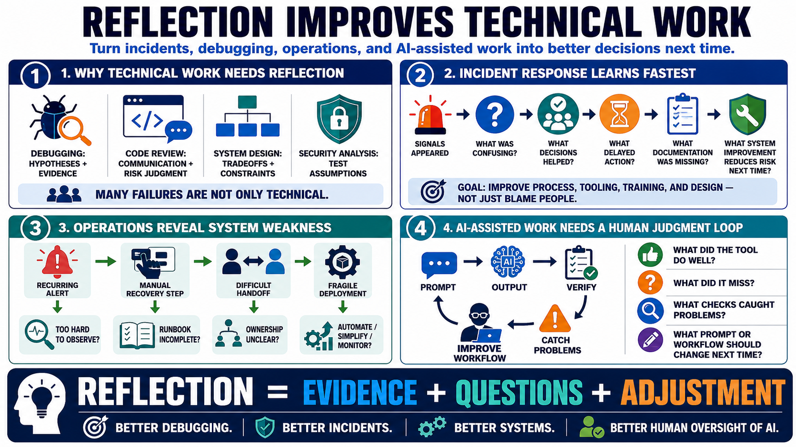

Reflective Practice for Technical Work
Connecting to LMS... Progress: in progress

Narration
Technical work benefits from reflection because many technical failures are not just technical. Debugging involves hypotheses, evidence, assumptions, tool choices, and attention. Code review involves communication, standards, risk judgment, and learning. System design involves tradeoffs, uncertainty, constraints, and future maintenance. Security analysis involves threat modeling, missed assumptions, and the discipline to test what seems obvious.
Incident response is a strong example. After an incident or near miss, a team can ask what signals appeared, what was confusing, what decisions helped, what delayed action, what documentation was missing, and what system improvement would reduce risk next time. The point is not only to identify individual mistakes. It is to find process, tooling, training, and design improvements.
Operations and troubleshooting also create reflective opportunities. A recurring alert, a manual recovery step, a difficult handoff, or a fragile deployment can reveal more than one immediate fix. Reflection asks whether the system is too hard to observe, whether the runbook is incomplete, whether ownership is unclear, or whether a routine task should be automated, simplified, or better monitored.
AI-assisted work adds another reflective layer. Developers and analysts should review prompts, assumptions, generated outputs, verification steps, and failure modes. What did the tool do well? What did it miss? What checks caught problems? What prompt or workflow would produce better results next time? Reflection helps keep AI assistance inside a disciplined human judgment loop.